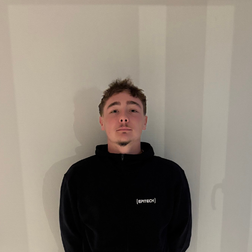

Bienvenue sur mon portfolio
Je suis Flavien Latrasse Chevalier, développeur web passionné par la création de sites web modernes et réactifs. Découvrez mes projets et n'hésitez pas à me contacter pour toute collaboration.
Contactez-moi Télécharger mon CV